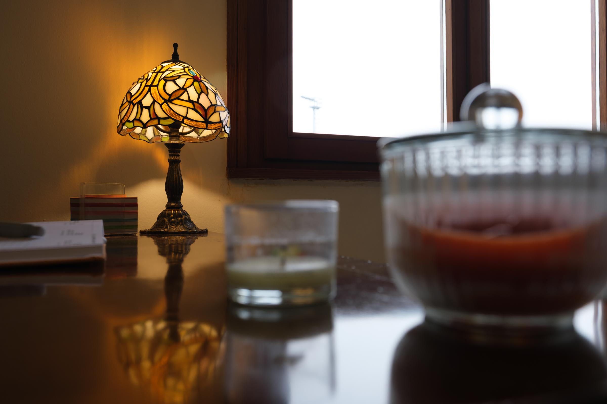
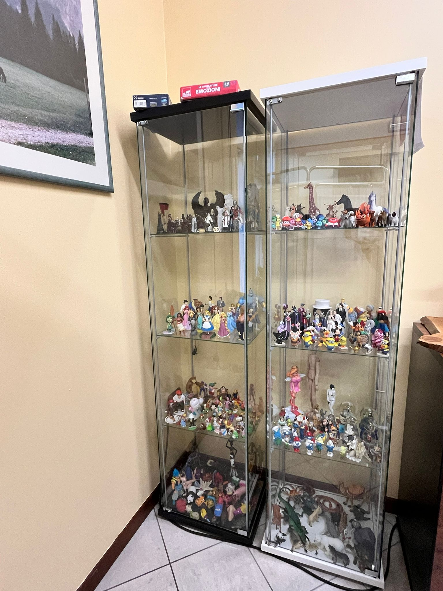
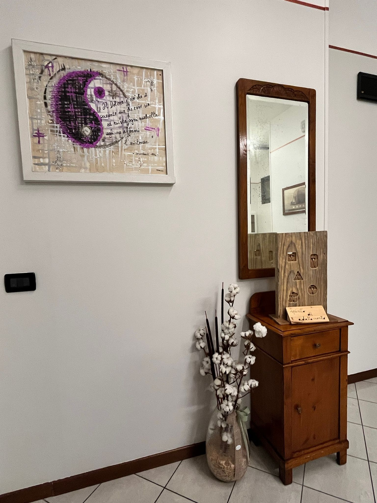
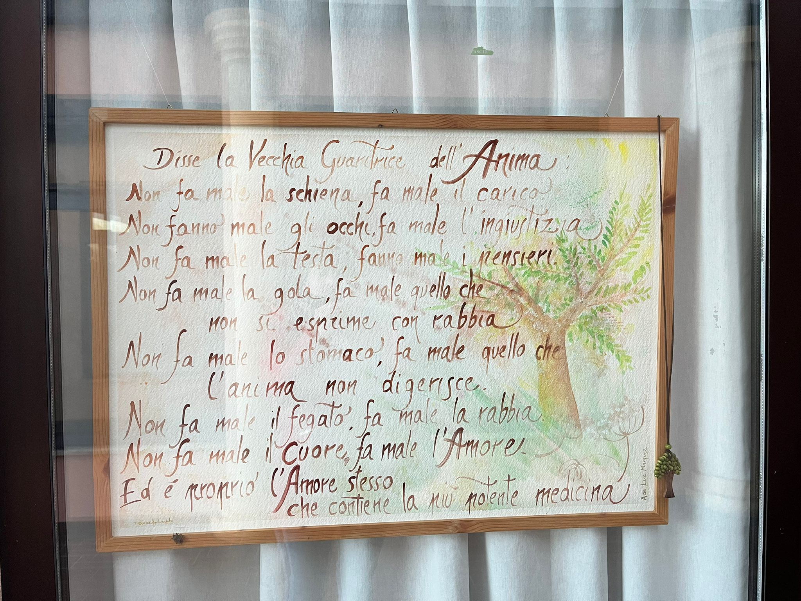

— C. G. Jung
Ogni percorso ha le sue stagioni. Troviamo insieme la tua.
Sono Lorena Ghiotto. Offro uno spazio di ascolto sicuro e non giudicante per accompagnarti attraverso le fasi della vita.

Sono psicologa, psicoterapeuta e formatrice mindfulness. Il mio lavoro nasce da una profonda passione per il sentire, per i processi emotivi e per le relazioni, ed è il risultato di un percorso personale e professionale fatto di scelte, cambi di direzione e trasformazioni.
Mi sono formata a Padova e poi a Roma, dove ho incontrato lo Psicodramma presso IPOD Plays: un'esperienza che ha rivoluzionato il mio modo di sentire e di accompagnare l'altro. Nel tempo ho integrato nel mio percorso la mindfulness, diventata un pilastro centrale del mio lavoro e della mia crescita personale.
Ad oggi psicodramma, metodi attivi e mindfulness sono i riferimenti principali del mio lavoro: li utilizzo nello studio clinico, nei laboratori esperienziali e nei percorsi di gruppo. Credo in un approccio che metta al centro la persona nella sua interezza.
La metafora delle stagioni ci aiuta a comprendere che ogni fase ha un senso.
Introspezione e riposo. Accogliamo il blocco per raccogliere energie.
Rinascita. Piantiamo i semi del cambiamento.
Pienezza. Consolidiamo le risorse e agiamo.
Raccolto. Integriamo e lasciamo andare ciò che non serve.
Mi occupo di accompagnare le persone che vivono stati d'ansia, attacchi di panico e paure pervasive che interferiscono con la quotidianità. Il lavoro terapeutico è orientato a comprendere le origini profonde dei sintomi, imparare a riconoscerli e gestirli, riducendo il senso di perdita di controllo.
Attraverso strumenti psicodinamici, metodi attivi, tecniche di mindfulness e di regolazione emotiva, è possibile ritrovare sicurezza, calma e fiducia nelle proprie risorse senza sentirsi sopraffatti.
Tutto questo offrendo uno spazio sicuro in cui comprendere e accogliere le proprie emozioni.
Quando le relazioni diventano fonte di frustrazione o dolore, il sostegno psicologico può fare la differenza. Lavoro con persone che sperimentano difficoltà nelle relazioni affettive, familiari, amicali o lavorative.
Insieme esploriamo modalità relazionali ripetitive, conflitti, vissuti di distanza o dipendenza emotiva. La terapia offre uno spazio sicuro per comprendere i propri bisogni, migliorare la comunicazione e costruire relazioni più autentiche, soddisfacenti ed appaganti.
Lo stress può accumularsi silenziosamente e influire sul benessere quotidiano; stress prolungato può avere un forte impatto sul benessere psicologico e corporeo.
Mi occupo di aiutare le persone a riconoscere le fonti di stress e i segnali del corpo, sviluppando strategie per gestire carichi emotivi e pressioni quotidiane. Il lavoro terapeutico integra ascolto psicologico, mindfulness e tecniche di regolazione psicocorporea per favorire equilibrio e prevenzione del burnout, imparando ad utilizzare strumenti concreti per rilassarsi, ritrovare equilibrio e affrontare le sfide con maggiore leggerezza.
Perdere qualcuno o qualcosa di importante lascia spesso un vuoto profondo. Accompagno persone che stanno attraversando un lutto, una perdita o una separazione significativa.
La terapia offre uno spazio di accoglienza del dolore, senza forzature né tempi prestabiliti. Attraverso l'ascolto, la condivisione e il lavoro emotivo, diventa possibile dare senso alla perdita, integrare l'assenza e ritrovare gradualmente un nuovo equilibrio interiore, trovando nuove risorse interiori per continuare a vivere in modo pieno.
Spesso ci troviamo a dubitare di noi stessi o a sottovalutare le nostre risorse. Mi occupo di percorsi orientati al rafforzamento dell'autostima, alla conoscenza di sé e allo sviluppo delle proprie potenzialità.
Lavoriamo su insicurezze, senso di inadeguatezza e blocchi emotivi, favorendo una maggiore consapevolezza dei propri valori e desideri. La crescita personale diventa così un processo di contatto autentico con sé e con le proprie risorse, a fidarsi di se stessi ed abbracciare la propria unicità.
Utilizzo tecniche di rilassamento psicocorporeo per favorire il contatto con il corpo e la regolazione del sistema emotivo.
Attraverso respirazione consapevole, mindfulness e pratiche corporee, è possibile ridurre tensioni fisiche e mentali. Questi strumenti aiutano a sviluppare una maggiore presenza, calma e ascolto di sé, integrando mente ed emozioni.
Offro percorsi di consulenza e psicoterapia online, garantendo uno spazio di ascolto sicuro, riservato ed efficace anche a distanza.
La modalità online consente continuità terapeutica, flessibilità e accessibilità, mantenendo la qualità della relazione terapeutica. È una soluzione adatta a chi vive lontano o ha difficoltà a recarsi in studio.
Mi occupo di supportare genitori nei diversi momenti del ciclo di vita familiare.
Il lavoro terapeutico aiuta a comprendere le dinamiche relazionali con i figli, affrontare difficoltà educative ed emotive e sostenere il ruolo genitoriale. L'obiettivo è favorire una genitorialità più consapevole, presente e in ascolto, così da rafforzare la relazione con i propri figli.
Accompagno le coppie che attraversano momenti di crisi, difficoltà comunicative o cambiamenti importanti. La terapia di coppia offre uno spazio protetto per esplorare conflitti, bisogni e dinamiche relazionali.
L'obiettivo è favorire una comunicazione più autentica, una maggiore comprensione reciproca e nuove possibilità di incontro. Lavoriamo insieme per migliorare la comunicazione, la comprensione e la vicinanza emotiva, aprendo possibilità di incontro e rinnovamento.
Mi occupo di bambini e adolescenti che vivono episodi di tristezza, apatia, sbalzi d'umore o cali di motivazione che interferiscono con la vita scolastica, le amicizie ed il benessere quotidiano. In terapia aiuto i bambini ed adolescenti a riconoscere e comprendere le emozioni che provano, imparando a gestire i momenti difficili con strumenti concreti e adeguati alla loro età.
Lavoriamo insieme su consapevolezza emotiva, regolazione dei sentimenti e valorizzazione delle risorse interne, favorendo la resilienza e la capacità di affrontare le sfide quotidiane. Spesso il percorso coinvolge anche la famiglia, creando uno spazio di ascolto e supporto condiviso.
L'obiettivo è che il bambino o l'adolescente possa ritrovare equilibrio, sicurezza e fiducia in sé stesso.
Accompagno bambini e adolescenti che mostrano difficoltà nel comportamento, impulsività, oppositività o problemi di autoregolazione. La terapia permette di comprendere il legame tra emozioni, pensieri e azioni, offrendo strategie concrete per modificare schemi disfunzionali e rafforzare comportamenti adattivi.
Lavoriamo in uno spazio sicuro dove il giovane può esprimersi liberamente, sperimentare nuovi modi di reagire e sviluppare consapevolezza delle proprie emozioni. Il percorso può includere attività pratiche, laboratori esperienziali e strumenti psicocorporei, pensati per essere applicabili nella vita di tutti i giorni.
L'obiettivo è migliorare il benessere, la relazione con gli altri e la capacità di affrontare le sfide quotidiane in modo più equilibrato.
Progetto e conduco percorsi di mindfulness pensati specificamente per bambini e adolescenti, sia individuali sia di gruppo. Gli incontri permettono di sviluppare attenzione, consapevolezza emotiva e regolazione dello stress, strumenti fondamentali per affrontare la scuola, le amicizie e le sfide della crescita.
La pratica aiuta i più giovani a riconoscere e accogliere le emozioni, a migliorare la concentrazione e a ritrovare calma e centratura nei momenti di tensione o agitazione. Nei gruppi, oltre al lavoro individuale, si favorisce la condivisione e la sperimentazione di pratiche di consapevolezza in un contesto sicuro e accogliente.
La mindfulness diventa così una risorsa concreta, utile sia nella vita quotidiana che nel percorso terapeutico, per crescere più sereni e consapevoli.
Accompagnare le persone nell'invecchiamento è per me un percorso di ascolto e sostegno che può davvero migliorare la qualità della vita. Offro uno spazio sicuro per affrontare solitudine e perdite, come il pensionamento, la scomparsa di una persona cara o il distacco dai figli, aiutando a costruire nuove relazioni e a ritrovare un senso di appartenenza.
Supporto chi vive ansia o depressione legate all'età, fornendo strumenti concreti per affrontare le paure e ritrovare serenità. Attraverso esercizi mirati, lavoro anche sulla stimolazione cognitiva, per preservare memoria e concentrazione.
Mi impegno a favorire autostima e motivazione, sostenendo la riscoperta di passioni e interessi che portano gioia e senso alla vita quotidiana.
Infine, accompagno chi convive con dolore o malattie croniche, aiutando a gestire emozioni e ad accogliere la propria esperienza con maggiore equilibrio e leggerezza.
Caricamento recensioni...
Scegli una data per il primo incontro conoscitivo.



Via San Giuseppe 1



Via Repoise 18/1